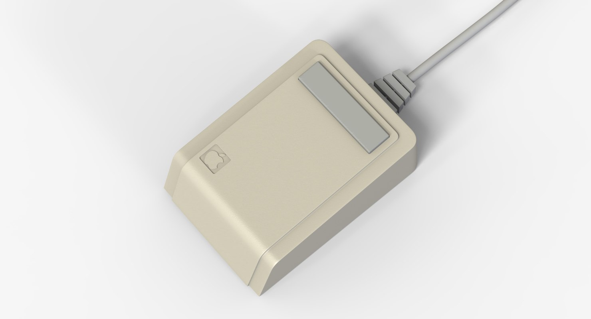

Trabajo Sitio Web (Ratón)
Introducción
¿Qué es y qué hace?
Un ratón (o mouse) es un dispositivo apuntador para computadora que es utilizado para facilitar el manejo de un entorno gráfico.
Generalmente está construido en plástico y está compuesto de una rueda y entre dos y cuatro botones, estos son:
- Botón iquierdo: sirve para clickar
- Botón derecho: es util para opciones extras como abrir las opciones de la carpeta, por ejemplo
- Botones laterales: sirven para página adelante y atrás, pero es más útil en videojuegos
- Rueda del ratón: el botón se acciona presionando la rueda del ratón, se suele utilizar para abrir páginas en otra pestaña
El ratón sirve para ser utilizado en un sistema operativo con entorno gráfico, como Windows, Linux o Mac, y para videojuegos y
aplicaciones de diseño gráfico como Photoshop, entre otras cosas.
Un poco de historia
Después de varios prototipos de punteros para una interfaz gráfica de computadora durante los 70, Steve Jobs y su equipo,
inspirados por su visita a las oficinas de Xerox, crearon en 1981, el ratón para el Apple Lisa, un ordenador personal
que tenía uno de los primeros sistemas operativos con interfaz gráfica de la historia


El Intellimouse de Microsoft también fue un ratón muy revolucionario ya que fue uno
de los primeros ratones ópticos del mercado (que son más precisos), además integraba botones
laterales. También es referencia en cuanto a forma y ergonómia para la mayoría de ratones
actuales, sobretodo los dedicados a videojuegos.
Daniel García Campoy 1ºDAM